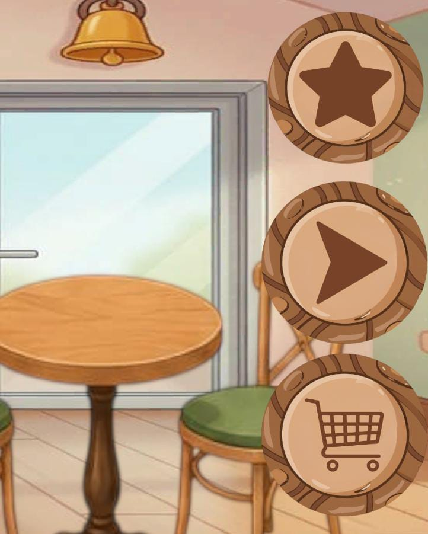
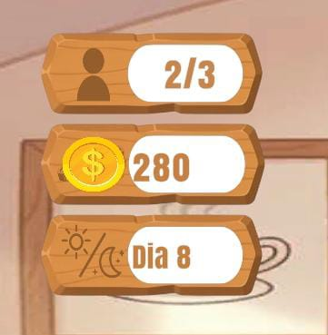
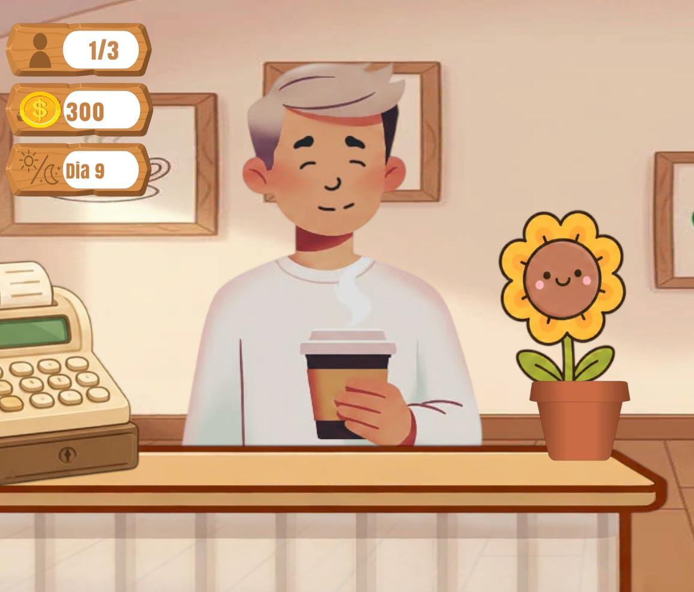
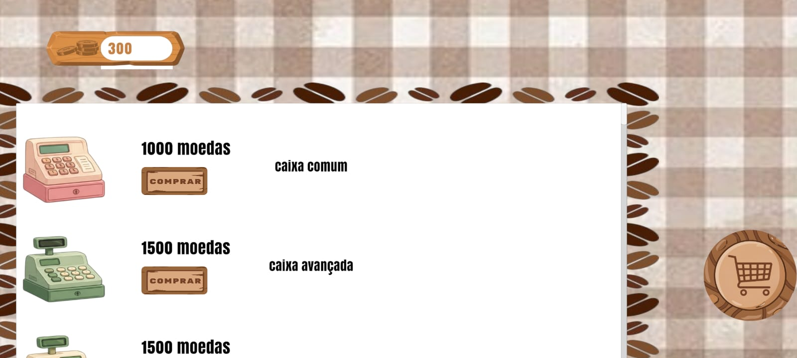
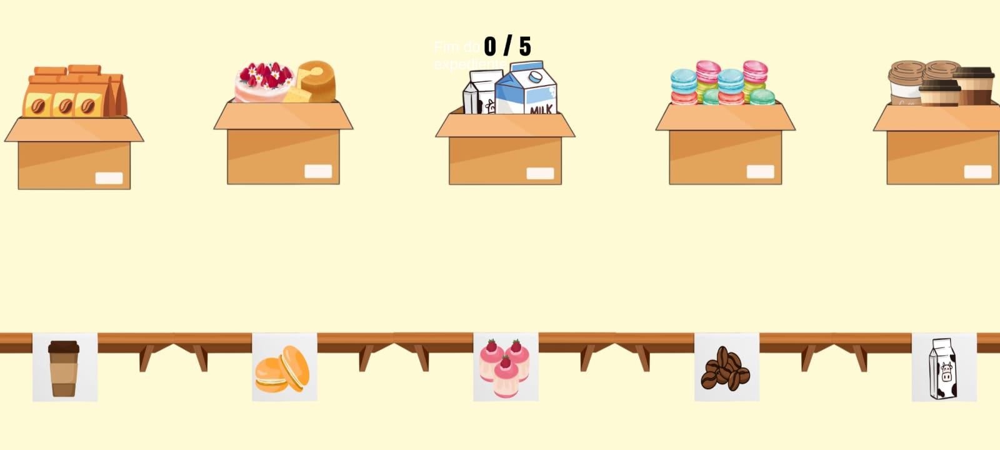

Conhecendo o ambiente
Clique! Teste! e os descubra! O de estrela mostra as missões diárias. O de seta te leva para fora da loja. O de carrinho te direciona para a loja.

A primeira UI do jogo é referente ao total de clientes que te visitaram naquele dia. A segunda se refere a moedas.A terceira ao dia.

Simples! não atende. Eles entram, pegam o café dão dinheiro e tchau.

Por fim qual objetivo do jogo? Conseguir moedas para melhorar sua cafeteria.

O jogo se baseia em você atender 3 clientes por dia e terminar o dia reorganizando a loja para começar o próximo dia, por isso existe o minigame de fim de turno
